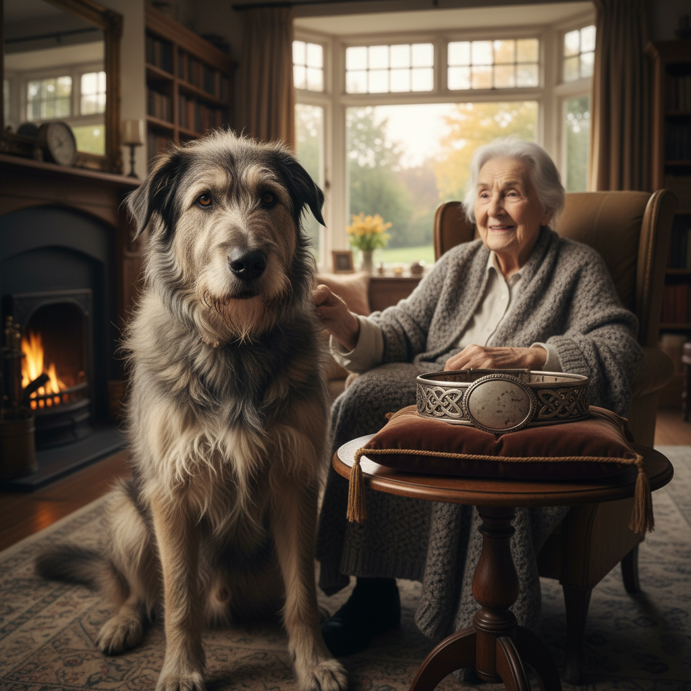

El eco de un ladrido
2026-02-19
Ante el ladrido, Old Tom y Willow se miraron con anticipación. El silencio que siguió parecía rebotar entre los árboles, como si las sombras misma estuvieran aguardando una respuesta.
Willow trotó delante de él, ladrando suavemente. Old Tom caminaba a su lado, moviendo la cola con cada paso para mantener el contacto visual. Se detuvieron frente a un arbusto espeso, desde donde provenía el ruido. Willow se asomó entre las ramas, ladeando la cabeza.
Willow: "¿Podría ser... él? ¿El dueño del collar?"
Old Tom suspiró. Tenía una conexión especial con Willow; podría sentir su curiosidad y emoción. "Es posible," murmuró, tomando el collar que aún sostenía entre las patas. Lo estudió de nuevo, buscando alguna pista que los llevara a su dueño.
El ladrido se acercaba, cada vez más fuerte y más claro. Old Tom identificó el tono: era una voz grave, un lamento lleno de melancolía. Willow parecía estar en pleno éxtasis, dándole vueltas en círculos mientras ladraba con entusiasmo.
De pronto, entre las ramas del arbusto, apareció una gran sombra. Un perro de tamaño considerables se asomó. Old Tom reconoció inmediatamente los rasgos que veía: era un gran pastor alemán, con un pelaje dorado y ojos tristes. Sus patas estaban manchadas con barro y sus orejas caían suaves hacia las mejillas.
El perro meneó la cola con timidez antes de acercarse más. Willow ladraba aún más fuerte, corriendo alrededor del gran perro. Old Tom se acuclilló, extendiendo una mano amigable en su dirección. "¡No te asustes!" exclamó Old Tom suavemente.
El pastor alemán se acercó cautelosamente y olisqueó la mano de Old Tom antes de sentarse frente a él. Willow ladraba felices, arrojándose contra los muslos del gran perro. "¿Quién es este... amigo?" preguntó Old Tom mientras miraba al pastor alemán.
El pastor alemán ladeó la cabeza y ladró de nuevo, esta vez más claramente. Willow: "¡Es un 'Guau!' ¡Está hablando!"
Old Tom se quedó boquiabierto. Nunca había visto a un perro que pudiera hablar; su curiosidad despertó por completo.
Willow, emocionada, tomó el collar entre sus pequeñas mandíbulas y lo mostró frente al gran perro. "¡Mira! ¿Tú también quieres ser nuestro amigo?" preguntó con entusiasmo. El pastor alemán ladeó la cabeza, olisqueando el collar. Luego, se levantó, mirando a Old Tom.
Old Tom sintió una mezcla de emoción y confusión. "¿Qué nos dices?" preguntó suavemente, mirando al gran perro. Willow ladraba aún más fuerte, emocionada ante la posible nueva amistad.
El pastor alemán ladró de nuevo, esta vez con un tono de tristeza y nostalgia en su voz. Old Tom comprendió que no estaba pidiendo amistad, sino compartiendo una historia. "¿Qué pasa?" preguntó Old Tom, extendiendo la mano para acariciar al pastor alemán.
Willow: "¡Vamos, nos lo va a contar!"
Pero el gran perro se apartó lentamente y caminó hacia un claro. Old Tom y Willow lo siguieron. A medida que se alejaban, el pastor alemán les contó una historia de aventuras y amistades olvidadas, mientras los llevaba de vuelta al pasado.
El perro relató cómo había viajado por todo el país con su dueño original, explorando campos y ríos. Habló de otros perros que había conocido, cada uno con su propia historia y aventura. Pero, con una tristeza en sus ojos, el pastor alemán mencionó un final trágico: su dueño se marchó sin él, dejándolo solo para luchar contra la desesperación y la soledad.
Willow, tomando el collar entre las mandíbulas, miró a Old Tom. "¿Qué le pasó?" preguntó con preocupación. Old Tom suspiró y asintió. "Eso es algo que deberías escuchar," respondió suavemente.
El pastor alemán les condujo al claro, donde Old Tom notó una figura en el centro: un anciano sentado en una silla de ruedas, con ojos tristes y una sonrisa apagada. El perro se acercó al anciano, ladrando suavemente antes de tumbarse a su lado.
Old Tom caminó hacia el anciano, quien alzó la vista para mirarle. "Habla con él," dijo Willow, tomando el collar entre las mandíbulas. Old Tom asintió y se sentó junto al perro. "¿Qué sucede, amigo?" preguntó suavemente.
El anciano sonrió tristemente, pero sus ojos eran sinceros cuando habló: "Hace mucho tiempo, era un joven llamado Adam. Un amigo me regaló este collar y juntos viajamos por todo el país. Pero un día, Adam se marchó sin decirme adiós, dejándome aquí para luchar contra la soledad y la desesperación." El anciano soltó una lágrima, pero su sonrisa se mantuvo firme.
Old Tom sintió una punzada de empatía. "Entiendo," dijo suavemente. "Pero también entiendo que aquí tienes nuevos amigos para acompañarte en este viaje." Willow ladraba con alegría, acurrucándose junto a Old Tom.
El anciano sonrió al ver a Willow y el pastor alemán, quienes compartían un momento de amistad. "Gracias," susurró. "Gracias por recordarme que incluso en la soledad, siempre hay alguien dispuesto a compartir su compañía."
Mañana, nuevo capítulo.
Lo que dicen los lectores
Vuelvo cada día. Engancha de verdad.
El gancho del final me tiene enganchado.
Ya lo he recomendado. Muy bien escrito.